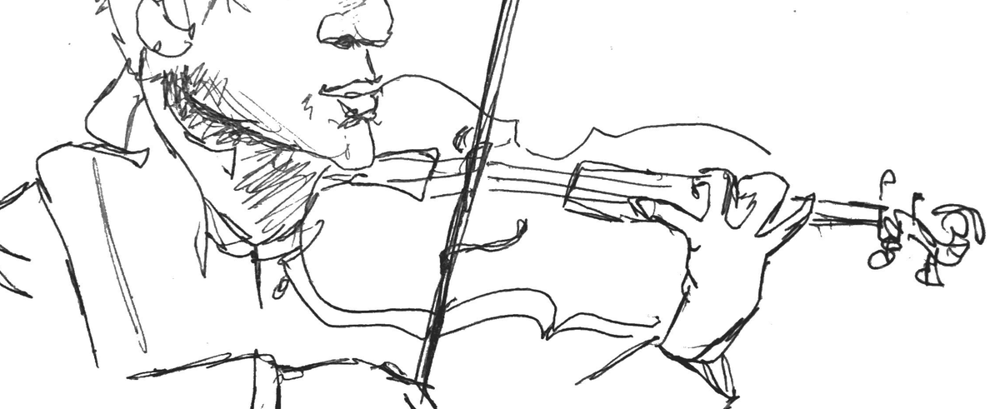

MetroDrone
FiddleHed · Practice Tools
📱
iOS Users:
Turn OFF Silent Mode (toggle switch on left side) to hear audio!
Beats Per Minute
Drone mode
Strings
Tuning Tone
Drone root
C
C#
D
D#
E
F
F#
G
G#
A
A#
B
Open strings
G
D
A
E
Any note (C3–D6)
C
C#
D
D#
E
F
F#
G
G#
A
A#
B
Low (3)
Mid (4)
High (5)
Highest (6)
Drone volume
Metronome volume
Start
Stop
Ready
